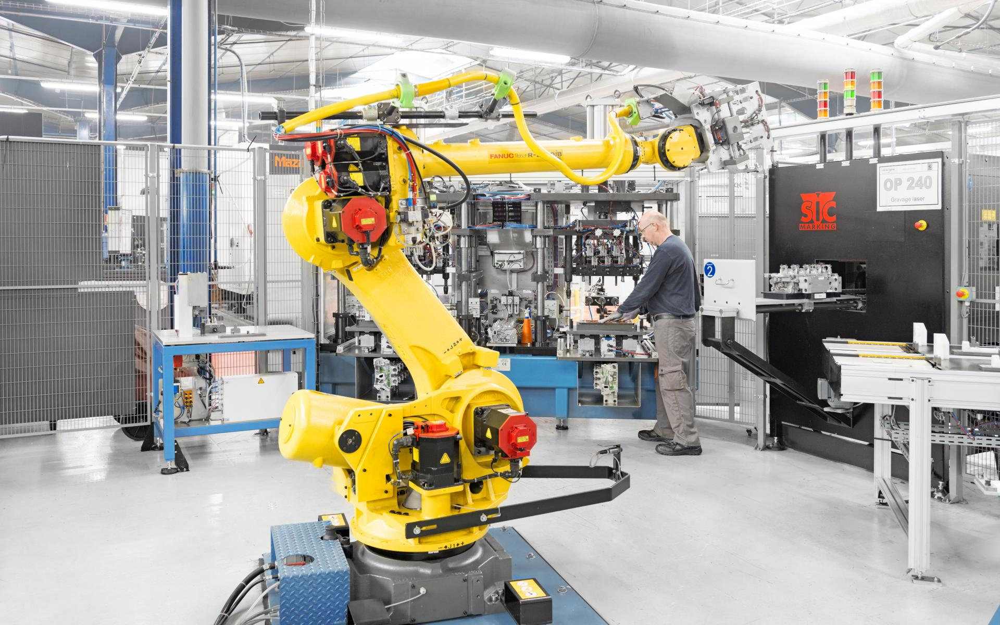

De nos jours, les robots industriels sont majoritairement employés dans l’ingénierie ou dans le secteur de l’automobile, mais ils ont initialement été développé dans le but d’intervenir dans des milieux à risques comme des zones nucléaires. Ils sont principalement utilisés pour leur rapidité, précision et efficacité. Ces robots sont conçus pour peindre, assembler des pièces, souder, porter de lourde charge et accomplir des travaux de minuties.
Depuis le début de leur usage, on remarque une perte d’emplois d’environ 14%, mais la robotique ouvre également de nouvelles possibilités d’orientation, dans le numérique.
